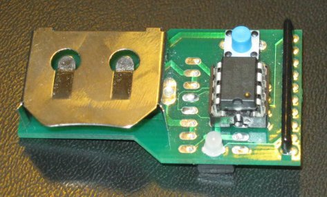

This is a scavenger hunt of places in building 7.
Each hint clues a number which is found on a separate floor of building 7, from the top (4th floor) to the basement.
These 5 numbers together are: 24-317, which is a room number at MIT. Teams could go there, and they would find an empty room.
What teams really need to do is enter 24-317 into Ben’s device:

(We decided at the last minute to scattering some components from Ben Bitdiddle's investigator report under one of the desks in 24-317, to prevent teams on the endgame from getting stuck here. But Manic Sages took those components with them, so we ended up writing a hint on the blackboard for the rest of the teams which reached endgame. In at least one case, this ended up being less help than hindrance: the team entered into Ben's device every possible permutation of the hint written on the blackboard before finally deciding to just enter the room number...)
When you enter 24-317 into the device, it gives you the location of the coin: TONY UNDER KRESGE POINT.
If you ended the hunt between 1am and 7am (during which time Kresge is locked), this would be the end of your hunt.
However, if you made it here before 1am or after 7am (as
Manic Sages did), you found another Bitdiddle device, hardwired
to blink out one message: IN KRESGE LITTLE CIRC 13
UP.
You would then enter Kresge Little Theater, and start searching.
Lighting circuit 13 is on the back wall of the theater, behind a black curtain and a cyc. Above it is an electrical box, and on top of that (8 feet or so above the floor) is a box labelled, "Jesus Christ Super Star Wars" containing a Tony award.
The organizers of the Tonys then materialized from the wings, with champagne. Somewhat disturbed at finding you with your Tony early, they decide to ignore this slight irregularity, considering that Max and Leo had actually won the Tony for Best Musical.
{kind=link}
{kind=link}
{kind=link}